Moteur de Jeu Custom (C++ / OpenGL)
Ce projet visait à concevoir un moteur de jeu complet inspiré des mécaniques de Portal. L'objectif principal était de relever un triple défi : maintenir une cohérence spatiale parfaite pour des portails récursifs, implémenter un pipeline de rendu moderne (PBR), et créer un workflow robuste permettant de lier l'éditeur Blender au moteur C++.
Démonstration du gameplay : fluidité des portails, clonage visuel et moteur physique.
Dans notre pipeline, Blender dépasse son rôle d'outil de modélisation pour devenir un véritable éditeur de niveau. Le moteur parse les fichiers glTF et utilise les métadonnées (Custom Properties) pour instancier dynamiquement la logique C++ (lumières, points d'apparition, surfaces "portalables").
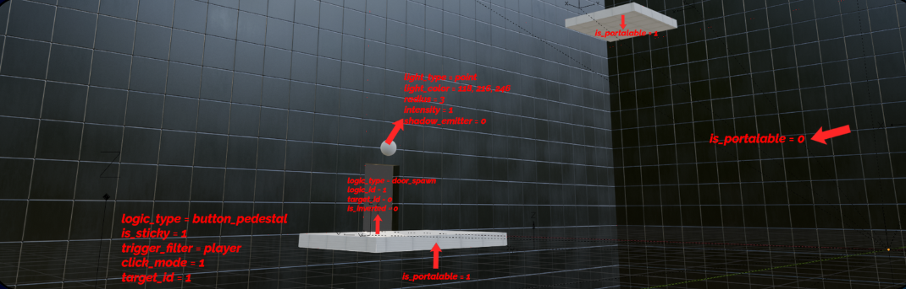
Vue de la salle et des Custom Properties depuis l'éditeur Blender.
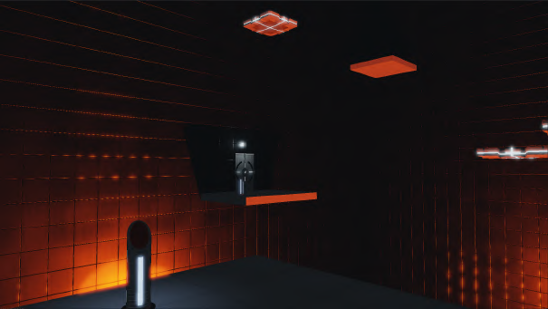
Rendu final et interactif de cette même salle dans le moteur.
Pour assurer une compatibilité parfaite avec les portails, la physique a été développée intégralement en interne avec un solveur d'impulsions et une stabilisation de Baumgarte.
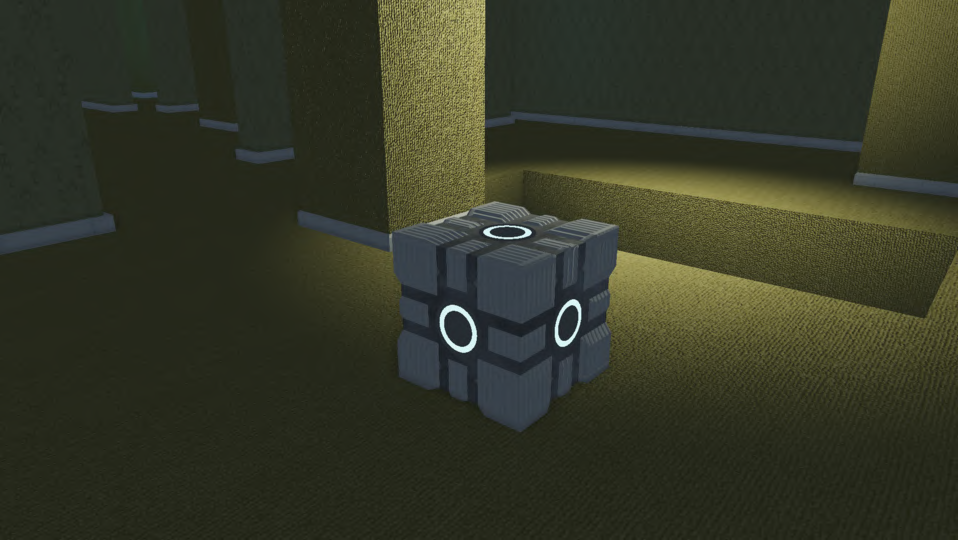
Cube au repos : le système de "sleeping" désactive ses calculs physiques.
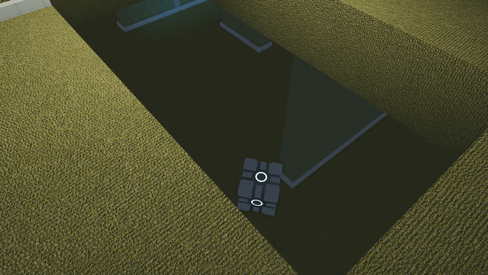
Réveil de l'objet suite à l'action du solveur d'impulsions.
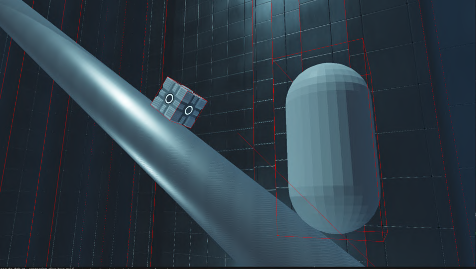
OBB épousant parfaitement la rotation du cube sur un plan incliné.
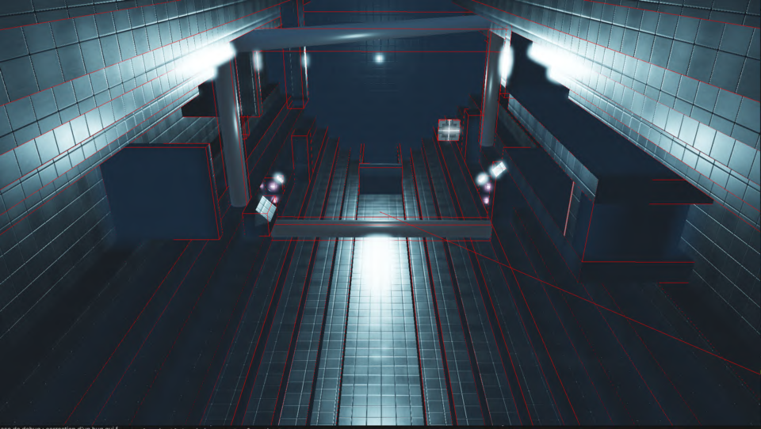
Primitives de collisions statiques et plans infinis gérés par le moteur.
Créer l'illusion d'un espace continu a nécessité une synchronisation visuelle et physique complexe :
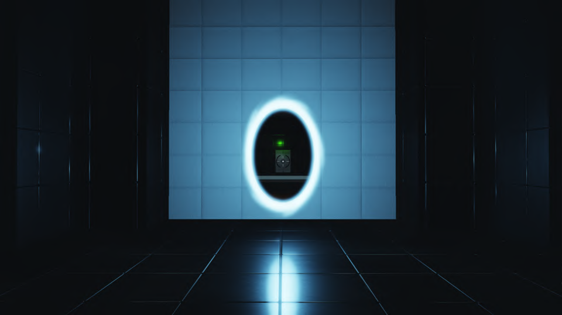
Rendu récursif et clipping oblique permettant de voir au travers.
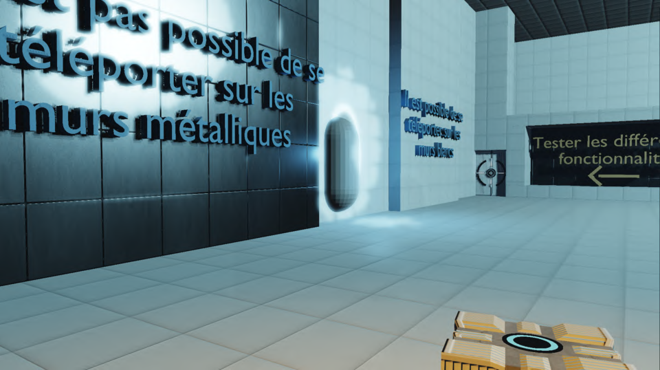
Illustration du clonage visuel lors de la traversée du joueur.
Le moteur intègre un pipeline Forward PBR basé sur le modèle de micro-facettes GGX. Pour pallier l'uniformité de l'Image Based Lighting (IBL), nous avons utilisé des Sondes Harmoniques Sphériques (SH Probes) pré-calculées et mises en cache.
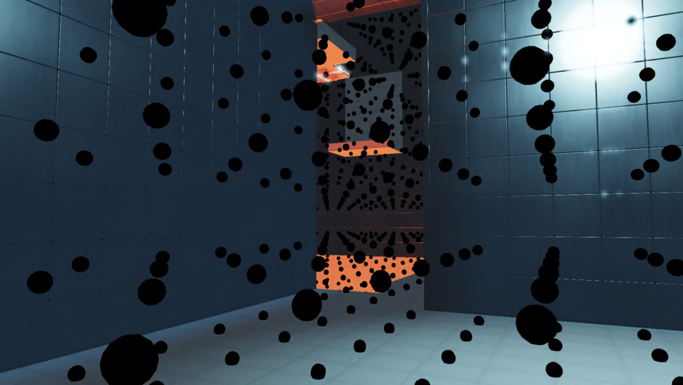
Visualisation des sondes locales capturant l'irradiance de la salle.
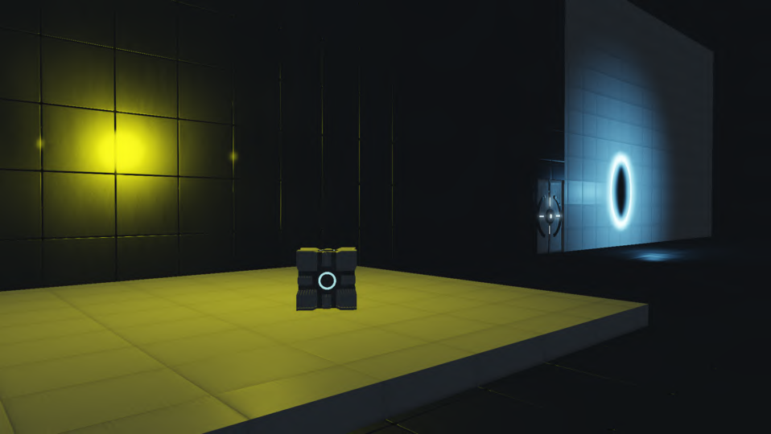
Visualisation de l'apport direct des sondes harmoniques sur un objet.
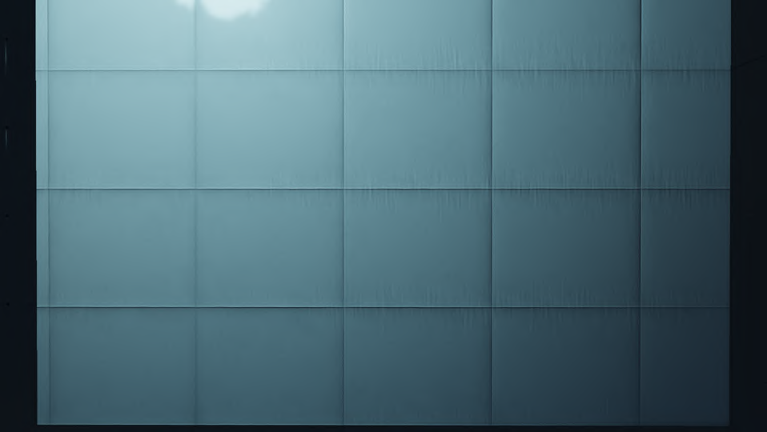
Rendu du matériau béton diffusant (surfaces "portalables").
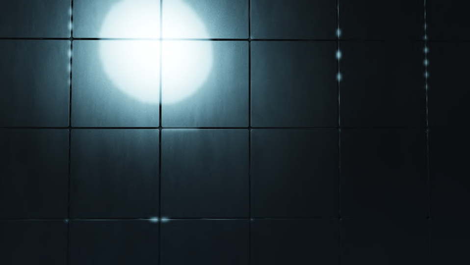
Rendu du matériau métallique avec reflets spéculaires GGX marqués.
Les entités interactives du jeu communiquent entre elles : boutons de pression avec filtres intelligents, portes et plateformes mobiles interpolées (Smootherstep).
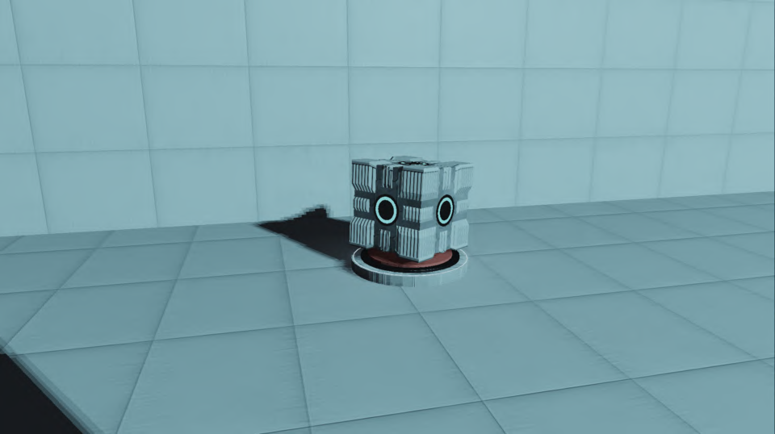
Bouton pression activé physiquement par le poids d'un cube.
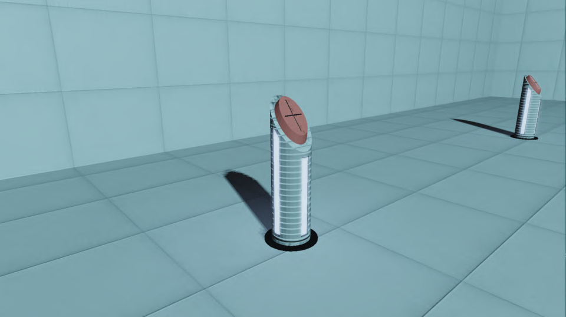
Interrupteur sur piédestal nécessitant une interaction directe.
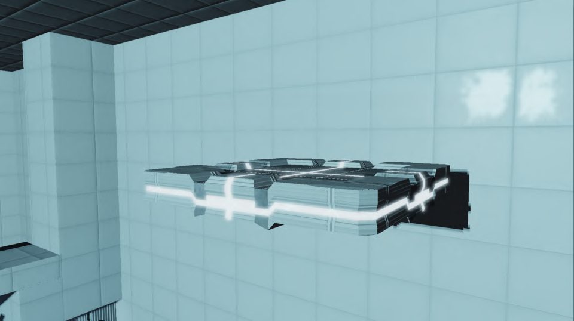
Plateforme en mouvement gérée par waypoints.
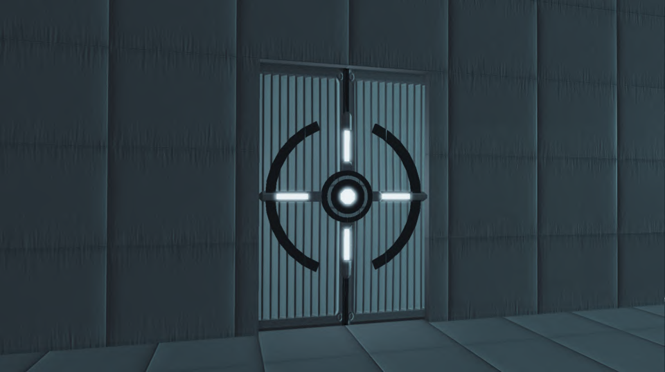
Porte automatisée s'ouvrant via les interactions du joueur.
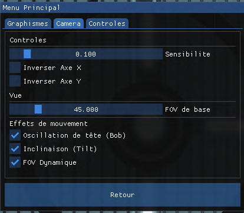
Paramètres de caméra (Head Bobbing, Tilt, FOV dynamique) pour renforcer l'immersion.
Pour garantir la jouabilité sur toutes les machines, nous avons implémenté des systèmes de Culling avancés (Frustum, Room PVS, Occlusion) ainsi que des paliers de qualité adaptatifs gérant dynamiquement l'activation des ombres et du post-traitement.
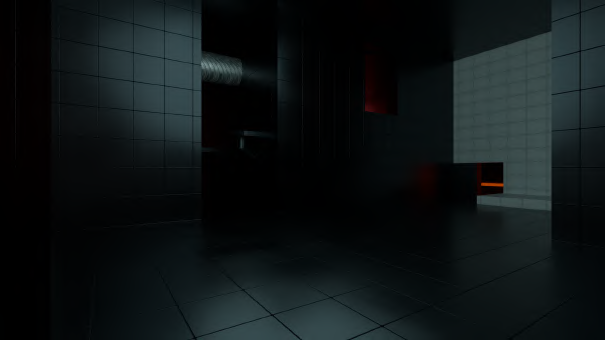
Vue normale du joueur dans une salle.
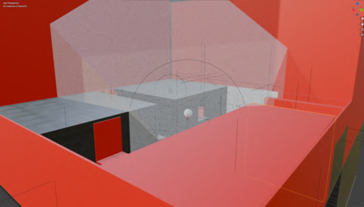
Visualisation de l'élagage : la géométrie hors champ et les salles adjacentes masquées sont supprimées (Room Culling & Frustum).
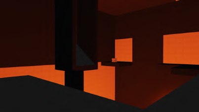
Potato : Modèle Blinn-Phong, sans PBR ni ombres.
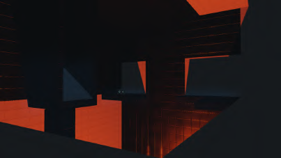
Medium : PBR et IBL actifs, ombres cuites (baked).
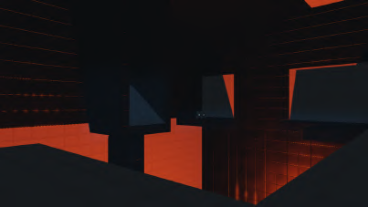
Ultra : PBR complet, SSAO, Bloom et ombres dynamiques.